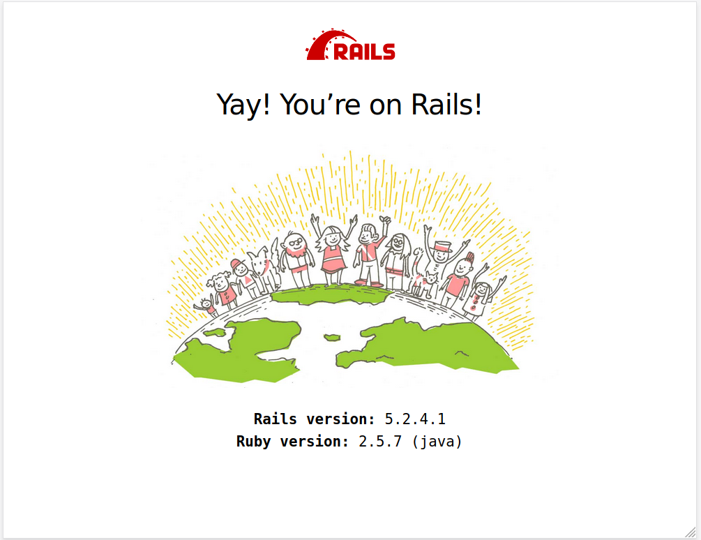

Version 5.3.0 · November 2019
…to be prepared…
Die für die Kombination JRuby 9k und Ruby on Rails 5.2
gemeldeten Issues — bezogen auf das
RubyGem activerecord-jdbc-adapter (objektrelationale Abbildung) finden sie hier:
→ jruby/activerecord-jdbc-adapter: label rails-5.2
Abstract
Ruby on Rails (kurz: Rails) ist ein Framework zum Entwickeln von Webanwendungen.
Die folgenden Schritte stellen die Funktionsfähigkeit der Installation von JRuby und Ruby on Rails sicher.
Ruby on Rails ist Open Source, wird gehostet auf GitHub und ist freigegeben unter der MIT-Lizenz.
Der Artikel ist in AsciiDoc geschrieben und mit Asciidoctor 2.0.10 erstellt worden.
|
|
Zu beachten ist, dass so ein Dokument zum Einen nie abschließend
sein kann, und zum Anderen bestimmte Konfigurationen anders, oder
auf einem anderem Weg durchgeführt werden können. Es gilt wie immer: Verwendung der Anleitung auf eigene Gefahr. |
Vorraussetzung
Die Installation wird für Ubuntu 18.04 LTS (Bionic Beaver) beschrieben.
Gleichwohl sind die einzelnen Schritte auch für
andere Debian-basierte GNU/Linux Distributionen übertragbar.
Die Installation von JRuby ist, wie in IiU — JRuby 9k 2.5 beschrieben, durchgeführt worden.
|
|
Eine Installation von Ruby on Rails 5.2 ist nur mit Ruby-Versionen >= 2.2 möglich! JRuby 9k hat aktuell die Versions-Nummer 9.2.9.0. |
JRuby 9.2.9.0
$ chruby
jruby-9.2.9.0 ruby-2.5.3 $ chruby jruby-9.2.9.0 $ which ruby /opt/rubies/jruby-9.2.9.0/bin/ruby $ ruby -v jruby 9.2.9.0 (2.5.7) 2019-10-30 458ad3e OpenJDK 64-Bit Server VM 11.0.4+11-post-Ubuntu-1ubuntu218.04.3 on 11.0.4+11-post-Ubuntu-1ubuntu218.04.3 +jit [linux-x86_64] $ gem -v 2.7.10 $ rake -V rake, version 12.3.2
| Für die Verwaltung der Ruby-Installationen verwende ich Chruby. | |
| Bei zusätzlichen Ausgaben: WARNING — siehe folgenden Tip. |
|
|
Zusätzliche Ausgaben: WARNING
... WARNING: An illegal reflective access operation has occurred WARNING: Illegal reflective access by org.jruby.util.SecurityHelper to field java.lang.reflect.Field.modifiers WARNING: Please consider reporting this to the maintainers of org.jruby.util.SecurityHelper WARNING: Use --illegal-access=warn to enable warnings of further illegal reflective access operations WARNING: All illegal access operations will be denied in a future release export JAVA_OPTS="$(echo --add-opens=java.base/{sun.nio.ch,java.lang,java.security,java.util,java.security.cert,java.util.zip,java.lang.reflect,java.util.regex,java.net,java.io,java.lang,javax.crypto}=ALL-UNNAMED) --illegal-access=warn"
|
RubyGems: Installation
Mit gem install … wird in der Regel auch Dokumentation installiert.
Für Rails wird in der Regel die offizielle Dokumentation im Internet genutzt:
→ Ruby on Rails Guides (v5.2)
Mit der folgenden Datei kann der Installationsschritt ausgelassen werden.
~/.gemrc#install: --no-document #update: --no-document gem: --no-document
|
|
Für die Ruby-Systeminstallation muß mit dem Benutzer root |
|
|
Die Optionen für den Programm-Aufruf gem install … --no-ri --no-rdoc sind deprecated. |
RubyGem: rails-5.2.3
$ gem search ^rails$ --remote *** REMOTE GEMS *** rails (6.0.0)
| Seit dem 15.08.2019 ist das die neueste Version des RubyGem rails. Ich installiere die - für mich relevante - Version 5.2.3 vom 28.03.2019! Entsprechend der Maintenance Policy for Ruby on Rails erhält Rails 5.2.Z weiterhin alle Sicherheitsaktualisierungen! |
|
|
Das RubyGem rails kann unterschiedlich installiert werden:
$ gem install rails
|
Mit gem install … werden auch alle Abhängigkeiten zu anderen RubyGems aufgelöst.
$ gem install rails --version '~> 5.2.3' Fetching: i18n-1.7.0.gem (100%) HEADS UP! i18n 1.1 changed fallbacks to exclude default locale. But that may break your application. Please check your Rails app for 'config.i18n.fallbacks = true'. If you're using I18n (>= 1.1.0) and Rails (< 5.2.2), this should be 'config.i18n.fallbacks = [I18n.default_locale]'. If not, fallbacks will be broken in your app by I18n 1.1.x. For more info see: https://github.com/svenfuchs/i18n/releases/tag/v1.1.0 Successfully installed i18n-1.7.0 Fetching: tzinfo-1.2.5.gem (100%) Successfully installed tzinfo-1.2.5 Fetching: activesupport-5.2.3.gem (100%) Successfully installed activesupport-5.2.3 Fetching: rack-test-1.1.0.gem (100%) Successfully installed rack-test-1.1.0 Fetching: nokogiri-1.10.5-java.gem (100%) Successfully installed nokogiri-1.10.5-java Fetching: crass-1.0.5.gem (100%) Successfully installed crass-1.0.5 Fetching: loofah-2.3.1.gem (100%) Successfully installed loofah-2.3.1 Fetching: rails-html-sanitizer-1.3.0.gem (100%) Successfully installed rails-html-sanitizer-1.3.0 Fetching: rails-dom-testing-2.0.3.gem (100%) Successfully installed rails-dom-testing-2.0.3 Fetching: builder-3.2.3.gem (100%) Successfully installed builder-3.2.3 Fetching: erubi-1.9.0.gem (100%) Successfully installed erubi-1.9.0 Fetching: actionview-5.2.3.gem (100%) Successfully installed actionview-5.2.3 Fetching: actionpack-5.2.3.gem (100%) Successfully installed actionpack-5.2.3 Fetching: activemodel-5.2.3.gem (100%) Successfully installed activemodel-5.2.3 Fetching: arel-9.0.0.gem (100%) Successfully installed arel-9.0.0 Fetching: activerecord-5.2.3.gem (100%) Successfully installed activerecord-5.2.3 Fetching: globalid-0.4.2.gem (100%) Successfully installed globalid-0.4.2 Fetching: activejob-5.2.3.gem (100%) Successfully installed activejob-5.2.3 Fetching: mini_mime-1.0.2.gem (100%) Successfully installed mini_mime-1.0.2 Fetching: mail-2.7.1.gem (100%) Successfully installed mail-2.7.1 Fetching: actionmailer-5.2.3.gem (100%) Successfully installed actionmailer-5.2.3 Fetching: nio4r-2.5.2-java.gem (100%) Successfully installed nio4r-2.5.2-java Fetching: websocket-extensions-0.1.4.gem (100%) Successfully installed websocket-extensions-0.1.4 Fetching: websocket-driver-0.7.1-java.gem (100%) Successfully installed websocket-driver-0.7.1-java Fetching: actioncable-5.2.3.gem (100%) Successfully installed actioncable-5.2.3 Fetching: mimemagic-0.3.3.gem (100%) Successfully installed mimemagic-0.3.3 Fetching: marcel-0.3.3.gem (100%) Successfully installed marcel-0.3.3 Fetching: activestorage-5.2.3.gem (100%) Successfully installed activestorage-5.2.3 Fetching: thor-0.20.3.gem (100%) Successfully installed thor-0.20.3 Fetching: railties-5.2.3.gem (100%) Successfully installed railties-5.2.3 Fetching: bundler-2.0.2.gem (100%) Successfully installed bundler-2.0.2 Fetching: sprockets-4.0.0.gem (100%) Successfully installed sprockets-4.0.0 Fetching: sprockets-rails-3.2.1.gem (100%) Successfully installed sprockets-rails-3.2.1 Fetching: rails-5.2.3.gem (100%) Successfully installed rails-5.2.3 34 gems installed
| Mit dem RubyGem rails-5.2.3 wurden insgesamt 34 Gems installiert. Hinweis: Weitere RubyGems müssen für das Framework Ruby on Rails installiert werden. |
|
|
Korrektur: bundler-2.0.2 — zu neu!
$ gem install bundler --version 1.17.3 Fetching: bundler-1.17.3.gem (100%) Successfully installed bundler-1.17.3 1 gem installed $ gem uninstall bundler Select gem to uninstall: 1. bundler-1.17.3 2. bundler-2.0.2 3. All versions > 2 Successfully uninstalled bundler-2.0.2 |
JRuby on Rails 5.2.3
Die notwendigen Schritte werden auf der Kommandozeile durchgeführt.
-
Datenbanksystem wählen
-
Datenbankadapter installieren
-
Datenbank erstellen
-
Projektverzeichnis erstellen
-
RubyGems installieren
-
Datenbankadapter konfigurieren
-
JavaScript-Runtime installieren
-
Aufruf der Webanwendung im Browser
Datenbanksystem wählen
Für das Framework Ruby on Rails sind die folgenden drei Datenbanksysteme zumindest für die Entwicklung (aber auch für die Produktion) eines neuen Rails-Projektes die erste Wahl:
-
SqLite3
Klein, kompakt und dateibasiert — mit diesen Vorzügen glänzt 'SQLite3'.
Ist in Ruby on Rails die Default-Datenbank. -
MySQL
Gut und schnell und überhaupt … überall verfügbar. -
PostgreSQL
Lupenreine OpenSource-Datenbanksystem für professionelle Anforderungen.
|
|
Die einzelnen Schritte für die Datenbank PostgreSQL werden
in diesem Artikel nicht beschrieben. |
Datenbankadapter installieren
$ gem install activerecord-jdbc-adapter -v 52.4 Fetching: activerecord-jdbc-adapter-52.4-java.gem (100%) Successfully installed activerecord-jdbc-adapter-52.4-java 1 gem installed
$ gem install activerecord-jdbcmysql-adapter -v 52.4 Fetching: jdbc-mysql-5.1.47.gem (100%) Successfully installed jdbc-mysql-5.1.47 Fetching: activerecord-jdbcmysql-adapter-52.4-java.gem (100%) Successfully installed activerecord-jdbcmysql-adapter-52.4-java 2 gems installed
$ gem install activerecord-jdbcsqlite3-adapter -v 52.4 Fetching: jdbc-sqlite3-3.28.0.gem (100%) Successfully installed jdbc-sqlite3-3.28.0 Fetching: activerecord-jdbcsqlite3-adapter-52.4-java.gem (100%) Successfully installed activerecord-jdbcsqlite3-adapter-52.4-java 2 gems installed
$ gem list --local | grep jdbc activerecord-jdbc-adapter (52.4 java) activerecord-jdbcmysql-adapter (52.4 java) activerecord-jdbcsqlite3-adapter (52.4 java) jdbc-mysql (5.1.47) jdbc-sqlite3 (3.28.0)
Datenbank erstellen
SQLite3 ist eine Programmbibliothek, die ein relationales Datenbanksystem enthält. Das bedeutet, der notwendige Aufwand an Administration für ein Datenbanksystem, sowie für das Anlegen von Benutzern, einer Datenbank und dem Zuweisen von Rechten entfällt.
MySQL hat für die Administration des Datenbanksystems verschiedene Programm-Angebote, unter anderem phpMyAdmin … aber eben auch die Kommandozeile.
$ mysql -uroot -p
Enter password:
Welcome to the MySQL monitor. Commands end with ; or \g.
Your MySQL connection id is 7
Server version: 5.7.24-0ubuntu0.18.04.1 (Ubuntu)
Copyright (c) 2000, 2018, Oracle and/or its affiliates. All rights reserved.
Oracle is a registered trademark of Oracle Corporation and/or its
affiliates. Other names may be trademarks of their respective
owners.
Type 'help;' or '\h' for help. Type '\c' to clear the current input statement.
mysql> GRANT ALL PRIVILEGES ON *.* TO 'sid'@'localhost'
-> IDENTIFIED BY 'g3h3im';
Query OK, 0 rows affected, 1 warning (0,00 sec)
mysql> flush privileges;
Query OK, 0 rows affected (0,00 sec)
mysql> exit
Bye
$ mysql -usid -p Enter password: Welcome to the MySQL monitor. Commands end with ; or \g. Your MySQL connection id is 8 Server version: 5.7.24-0ubuntu0.18.04.1 (Ubuntu) Copyright (c) 2000, 2018, Oracle and/or its affiliates. All rights reserved. Oracle is a registered trademark of Oracle Corporation and/or its affiliates. Other names may be trademarks of their respective owners. Type 'help;' or '\h' for help. Type '\c' to clear the current input statement. mysql> CREATE DATABASE jmyapp_develpment; Query OK, 1 row affected (0.00 sec) mysql> exit Bye
Projektverzeichnis erstellen
$ cd $ mkdir RailsDir $ cd RailsDir $ rails _5.2.3_ new jMyApp --database=mysql -Bcreate create README.md create Rakefile create .ruby-version create config.ru create .gitignore create Gemfile
run git init from "." Leeres Git-Repository in /yard/80/RailsDir/jMyApp/.git/ initialisiert create package.json create app create app/assets/config/manifest.js create app/assets/javascripts/application.js ... create bin create bin/bundle create bin/rails create bin/rake create bin/setup create bin/update create bin/yarn ... create config/puma.rb
... create config/initializers/cors.rb
... create config/initializers/new_framework_defaults_5_2.rb
... create storage create storage/.keep create tmp/storage create tmp/storage/.keep remove config/initializers/cors.rb
| _5.2.3_ — Festlegen, welche Rails-Version verwendet werden soll. --database=mysql — Festlegen, welches DBMS verwendet werden soll. |
|
| Für das Datenbanksystem SQLite3 verkürzt sich der Aufruf: rails _5.2.3_ new myapp |
|
| -B — Don’t run bundle install Kein automatisches install und update von RubyGems! |
|
| Die zu diesem Zeitpunkt benötigten RubyGems und deren Abhängigkeiten untereinander entnehmen Sie der Datei Gemfile. |
|
| Konfigurationsdatei für den neuen HTTP-Server Puma (ersetzt WEBrick). | |
| Dateien anlegen … und wieder entfernen! | |
| Konfigurationsdatei mit den Einstellungen für den Datenbankzugriff (Datenbankadapter). |
$ cd jMyApp $ tree -LF 2 . . ├── app/ │ ├── assets/ │ ├── channels/ │ ├── controllers/ │ ├── helpers/ │ ├── jobs/ │ ├── mailers/ │ ├── models/ │ └── views/ ├── bin/ │ ├── bundle* │ ├── rails* │ ├── rake* │ ├── setup* │ ├── update* │ └── yarn* ├── config/ │ ├── application.rb │ ├── boot.rb │ ├── cable.yml │ ├── credentials.yml.enc │ ├── database.yml
Datei: config/database.yml |
|
Datei: Gemfile |
RubyGems installieren
Gemfile genannten Abhängigkeiten$ bundle check Bundler can't satisfy your Gemfile's dependencies. Install missing gems with `bundle install`. $ bundle list
| Der User muß die fehlenden Gems installieren |
$ ls -l Gemfile* -rw-r--r-- 1 sid medien 1733 Nov 3 13:21 Gemfile
Gemfilesource 'https://rubygems.org'
git_source(:github) { |repo| "https://github.com/#{repo}.git" }
ruby '2.5.7'
# Bundle edge Rails instead: gem 'rails', github: 'rails/rails'
gem 'rails', '~> 5.2.3'
# Use jdbcmysql as the database for Active Record
gem 'activerecord-jdbcmysql-adapter'
# Use Puma as the app server
gem 'puma', '~> 3.11'
# Use SCSS for stylesheets
gem 'sass-rails', '~> 5.0'
# Use Uglifier as compressor for JavaScript assets
gem 'uglifier', '>= 1.3.0'
# See https://github.com/rails/execjs#readme for more supported runtimes
gem 'therubyrhino'
# Use CoffeeScript for .coffee assets and views
gem 'coffee-rails', '~> 4.2'
# Turbolinks makes navigating your web application faster. Read more: https://github.com/turbolinks/turbolinks
gem 'turbolinks', '~> 5'
# Build JSON APIs with ease. Read more: https://github.com/rails/jbuilder
gem 'jbuilder', '~> 2.5'
# Use Redis adapter to run Action Cable in production
# gem 'redis', '~> 4.0'
# Use ActiveModel has_secure_password
# gem 'bcrypt', '~> 3.1.7'
# Use ActiveStorage variant
# gem 'mini_magick', '~> 4.8'
# Use Capistrano for deployment
# gem 'capistrano-rails', group: :development
group :development do
# Access an interactive console on exception pages or by calling 'console' anywhere in the code.
gem 'web-console', '>= 3.3.0'
gem 'listen', '>= 3.0.5', '< 3.2'
end
group :test do
# Adds support for Capybara system testing and selenium driver
gem 'capybara', '>= 2.15'
gem 'selenium-webdriver'
# Easy installation and use of chromedriver to run system tests with Chrome
gem 'chromedriver-helper'
end
# Windows does not include zoneinfo files, so bundle the tzinfo-data gem
gem 'tzinfo-data', platforms: [:mingw, :mswin, :x64_mingw, :jruby]
| Twiddle Waka '~> 4.2' ist identisch mit den Bedingungen '>= 4.2' und '< 5'. | |
| Twiddle Waka '~> 2.5' ist identisch mit den Bedingungen '>= 2.5' und '< 3'. | |
| Twiddle Waka '~> 3.1.7' ist identisch mit den Bedingungen '>= 3.1.7' und '< 3.2'. |
$ bundle install
| Mit Chruby besitzt ein einfacher Benutzer die Möglichkeit RubyGems nachzuinstallieren. Die RubyGems werden im Verzeichnis ~/.gem/jruby/2.5.3 installiert. |
|
| Installing: Neu installierte RubyGems | |
| Using: Bereits installierte RubyGems |
$ gem uninstall chromedriver-helper Remove executables: chromedriver-helper, chromedriver-update in addition to the gem? [Yn] y Removing chromedriver-helper Removing chromedriver-update Successfully uninstalled chromedriver-helper-2.1.1 $ gem install webdriver Fetching: webdrivers-4.1.3.gem (100%) Successfully installed webdrivers-4.1.3 1 gem installed
Gemfile...
group :test do
# Adds support for Capybara system testing and selenium driver
gem 'capybara', '>= 2.15'
gem 'selenium-webdriver'
# Easy installation and use of chromedriver to run system tests with Chrome
# gem 'chromedriver-helper'
gem 'webdrivers'
end
...| RubyGem: chromedriver-helper — deaktiviert |
Gemfile (2)$ bundle check
| Als Benutzer sid! |
Datenbankadapter konfigurieren
config/database.yml — sqlite3[...] development: adapter: sqlite3 database: db/development.sqlite3
| Die Datenbank-Datei wird mit dem ersten Aufruf automatisch angelegt. Keine Angabe für Benutzer und Passwort! |
config/database.yml — mysql[...] default: &default adapter: mysql2 encoding: utf8 pool: 5 username: sid
| Entsprechend ändern. | |
| Von MySQL erwartete Einstellungen zu Datetime/Timezone | |
| Es werden ausschließlich die zu default geänderten Einträge aufgeführt. | |
| Der hier vorgeschlagene Datenbank-Name wird von Ruby on Rails
automatisch gebildet: Name der Applikation 'jMyApp' und dem Zusatz '_development' |
JavaScript-Runtime installieren
Für die erzeugte Ruby on Rails-Anwendung ist eine JavaScript-Runtime erforderlich.
Das RubyGem ist bereits installiert und im Gemfile eingebunden.
Gemfile... # See https://github.com/rails/execjs#readme for more supported runtimes gem 'therubyrhino' ...
$ sudo apt -s install nodejs
| apt -s … (simulate) |
Aufruf der Webanwendung im Browser
Puma wird in Ruby on Rails default-mäßig als HTTP-Server verwendet.
$ rails s => Booting Puma => Rails 5.2.3 application starting in development => Run `rails server -h` for more startup options Puma starting in single mode... * Version 3.12.1 (jruby 9.2.9.0 - ruby 2.5.7), codename: Llamas in Pajamas
| Ruby Version 2.5.7 | |
| Der Webserver läuft ohne Port-Angabe (--port …) auf Port 3000. |
BROWSER> http://localhost:3000/
| Grundsätzlicher Test der Verbindung! |

$ rails about About your application's environment Rails version 5.2.3 Ruby version 2.5.7-p0 (java)
| Ruby Version 2.5.7 |
Anhang
Abschließend die Liste der aktuell installierten RubyGems.
$ gem list --local
| Anzahl der installierten RubyGems: 105 |
⇧ · Document generated with Asciidoctor 2.0.10.